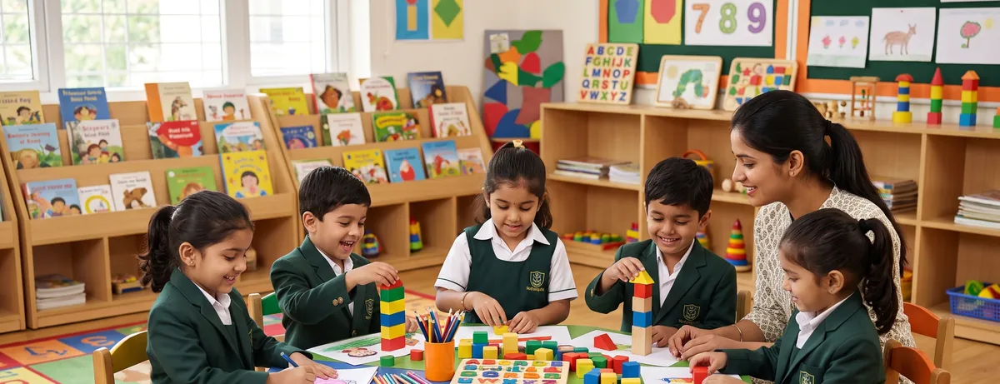
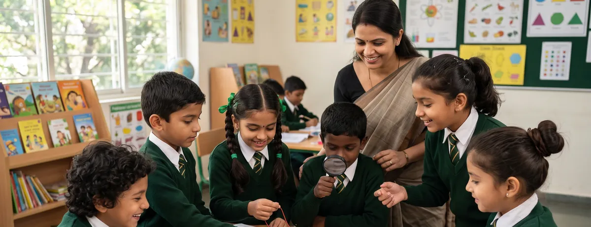
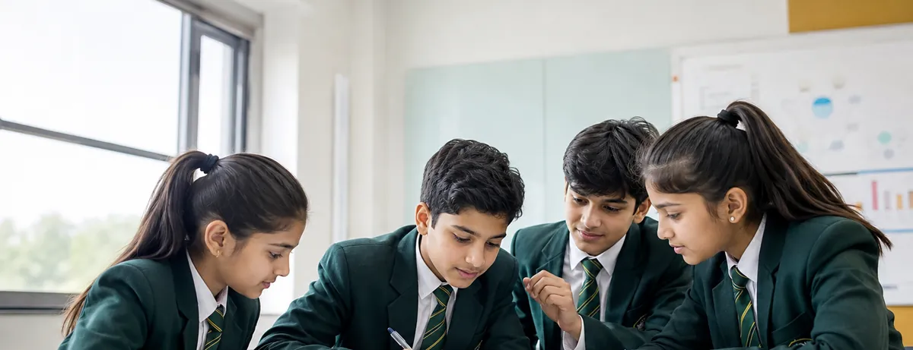

A UP Board-aligned curriculum structured around three clear stages — each one building steadily on the last.
Our pre-primary wing is warm and interactive by design. Children in Nursery, LKG and UKG learn through play, rhythm and repetition — building the cognitive and motor skills that make formal schooling feel natural rather than sudden.

Grade LevelsInteractive, activity-based classrooms designed for a child's very first school experience — safe, warm and full of encouragement.
From Class 1, learning becomes more structured — but never rushed. We focus on solid concept-building in languages, mathematics and EVS, alongside early exposure to computers so children grow comfortable with technology from the start.

Grade LevelsA steady, well-paced curriculum that builds core academic strength while keeping classrooms lively and encouraging.
Middle school students move into comprehensive, UP Board-aligned subject teaching across Science, English, Mathematics and Social Sciences — supported by focused clinics that strengthen exactly where each child needs it.

Grade LevelsComprehensive subject teaching aligned with UP Board standards, with dedicated English and Science subject clinics.
Where students need it most, we offer specialised, small-group support to build lasting fundamentals.
Targeted sessions on grammar, vocabulary, reading comprehension and confident spoken & written expression — for students who need extra reinforcement.
Hands-on clarification of core science concepts, closing gaps before they grow — with plenty of examples and guided practice.
Explore admissions for Nursery to Class 8 for the 2026–27 session.